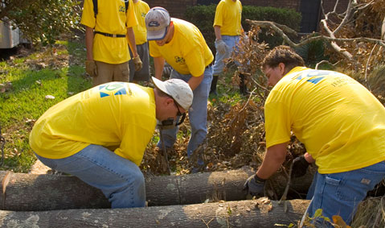

Sobre o Programa Mãos Que Ajudam
Objetivos do Programa
O Mãos Que Ajudam é uma iniciativa permanente de ajuda humanitária e serviço comunitário organizada por A Igreja de Jesus Cristo dos Santos dos Últimos Dias. O programa mobiliza milhares de voluntários de todas as idades para estender a mão a quem precisa, através de projetos diversos que beneficiam comunidades em situações de vulnerabilidade.
Atividades Realizadas
- Distribuição de alimentos e roupas
- Projetos de saúde e educação
- Assistência em desastres naturais

Mais Informações
Para mais informações, visite o site oficial.